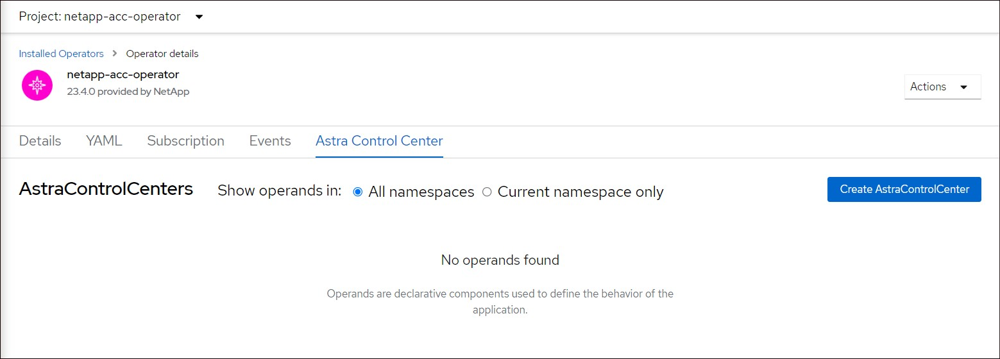

Note di rilascio
Note di rilascio
Installare Astra Control Center utilizzando OpenShift OperatorHub
 Suggerisci modifiche
Suggerisci modifiche
Se utilizzi Red Hat OpenShift, puoi installare Astra Control Center usando l'operatore certificato Red Hat. Seguire questa procedura per installare Astra Control Center da "Catalogo Red Hat Ecosystem" Oppure utilizzando Red Hat OpenShift Container Platform.
Una volta completata questa procedura, tornare alla procedura di installazione per completare la "fasi rimanenti" per verificare che l'installazione sia riuscita e accedere.
-
Soddisfare i requisiti ambientali: "Prima di iniziare l'installazione, preparare l'ambiente per l'implementazione di Astra Control Center".

Implementare Astra Control Center in un terzo dominio di errore o in un sito secondario. Questa opzione è consigliata per la replica delle applicazioni e il disaster recovery perfetto. -
Assicurare operatori di cluster e servizi API sani:
-
Dal cluster OpenShift, assicurati che tutti gli operatori del cluster siano in buono stato:
oc get clusteroperators -
Dal cluster OpenShift, assicurati che tutti i servizi API siano in buono stato:
oc get apiservices
-
-
Assicurarsi che un FQDN instradabile: Il FQDN Astra che si intende utilizzare può essere instradato al cluster. Ciò significa che si dispone di una voce DNS nel server DNS interno o si sta utilizzando un percorso URL principale già registrato.
-
Ottieni autorizzazioni OpenShift: Avrai bisogno di tutte le autorizzazioni necessarie e dell'accesso a Red Hat OpenShift Container Platform per eseguire i passaggi di installazione descritti.
-
Configura un cert manager: Se nel cluster esiste già un cert manager, è necessario eseguirne alcuni "fasi preliminari" In modo che Astra Control Center non installi il proprio cert manager. Per impostazione predefinita, Astra Control Center installa il proprio cert manager durante l'installazione.
-
Configura controller ingresso Kubernetes: Se si dispone di un controller ingresso Kubernetes che gestisce l'accesso esterno a servizi, come il bilanciamento del carico in un cluster, è necessario configurarlo per l'utilizzo con Astra Control Center:
-
Creare lo spazio dei nomi dell'operatore:
oc create namespace netapp-acc-operator
-
"Completare la configurazione" per il proprio tipo di controller di ingresso.
-
-
* (Solo driver SAN ONTAP) Abilita multipath*: Se stai utilizzando un driver SAN ONTAP, assicurati che multipath sia abilitato su tutti i tuoi cluster Kubernetes.
È inoltre necessario considerare quanto segue:
-
Ottenere l'accesso al Registro di sistema dell'immagine di controllo Astra di NetApp:
È possibile ottenere le immagini di installazione e i miglioramenti delle funzionalità per Astra Control, come Astra Control provisioner, dal registro delle immagini di NetApp.
-
Registrare l'ID dell'account Astra Control necessario per accedere al Registro di sistema.
Puoi visualizzare l'ID dell'account nell'interfaccia utente Web di Astra Control Service. Selezionare l'icona a forma di figura in alto a destra nella pagina, selezionare accesso API e annotare l'ID account.
-
Nella stessa pagina, selezionare generate API token, copiare la stringa del token API negli Appunti e salvarla nell'editor.
-
Accedere al registro Astra Control:
docker login cr.astra.netapp.io -u <account-id> -p <api-token>
-
-
Installare una mesh di servizio per comunicazioni sicure: Si consiglia vivamente di proteggere i canali di comunicazione del cluster host Astra Control utilizzando un "mesh di servizio supportata".

L'integrazione di Astra Control Center con una mesh di servizio può essere eseguita solo durante Astra Control Center "installazione" e non indipendente da questo processo. Il passaggio da un ambiente con mesh a un ambiente senza mesh non è supportato. Per l'uso della mesh del servizio Istio, è necessario effettuare le seguenti operazioni:
-
Aggiungere un
istio-injection:enabledEtichetta nel namespace Astra prima di implementare Astra Control Center. -
Utilizzare
Genericimpostazione ingresso e fornire un ingresso alternativo per "bilanciamento del carico esterno". -
Per i cluster Red Hat OpenShift, è necessario definire
NetworkAttachmentDefinitionSu tutti i namespace Astra Control Center associati (netapp-acc-operator,netapp-acc,netapp-monitoringper i cluster di applicazioni o qualsiasi namespace personalizzato che sia stato sostituito).cat <<EOF | oc -n netapp-acc-operator create -f - apiVersion: "k8s.cni.cncf.io/v1" kind: NetworkAttachmentDefinition metadata: name: istio-cni EOF cat <<EOF | oc -n netapp-acc create -f - apiVersion: "k8s.cni.cncf.io/v1" kind: NetworkAttachmentDefinition metadata: name: istio-cni EOF cat <<EOF | oc -n netapp-monitoring create -f - apiVersion: "k8s.cni.cncf.io/v1" kind: NetworkAttachmentDefinition metadata: name: istio-cni EOF
-
|
|
Non eliminare l'operatore di Astra Control Center (ad esempio, kubectl delete -f astra_control_center_operator_deploy.yaml) In qualsiasi momento durante l'installazione o il funzionamento di Astra Control Center per evitare di eliminare i pod.
|
Scarica ed estrai Astra Control Center
Scarica le immagini di Astra Control Center da una delle seguenti posizioni:
-
Registro di sistema dell'immagine del servizio di controllo Astra: Utilizzare questa opzione se non si utilizza un registro locale con le immagini del centro di controllo Astra o se si preferisce questo metodo per il download del pacchetto dal sito di supporto NetApp.
-
Sito di supporto NetApp: Utilizzare questa opzione se si utilizza un registro locale con le immagini del Centro di controllo Astra.
-
Effettua l'accesso ad Astra Control Service.
-
Nella Dashboard, selezionare distribuire un'istanza autogestita di Astra Control.
-
Seguire le istruzioni per accedere al registro delle immagini di Astra Control, estrarre l'immagine di installazione di Astra Control Center ed estrarre l'immagine.
-
Scarica il bundle contenente Astra Control Center (
astra-control-center-[version].tar.gz) da "Pagina di download di Astra Control Center". -
(Consigliato ma opzionale) Scarica il bundle di certificati e firme per Astra Control Center (
astra-control-center-certs-[version].tar.gz) per verificare la firma del bundle.tar -vxzf astra-control-center-certs-[version].tar.gzopenssl dgst -sha256 -verify certs/AstraControlCenter-public.pub -signature certs/astra-control-center-[version].tar.gz.sig astra-control-center-[version].tar.gzViene visualizzato l'output
Verified OKuna volta completata la verifica. -
Estrarre le immagini dal bundle Astra Control Center:
tar -vxzf astra-control-center-[version].tar.gz
Completare ulteriori passaggi se si utilizza un registro locale
Se si intende inviare il pacchetto Astra Control Center al registro locale, è necessario utilizzare il plugin della riga di comando di NetApp Astra kubectl.
Installare il plug-in NetApp Astra kubectl
Completare questi passaggi per installare il più recente plugin della riga di comando di NetApp Astra kubectl.
NetApp fornisce binari per plug-in per diverse architetture CPU e sistemi operativi. Prima di eseguire questa attività, è necessario conoscere la CPU e il sistema operativo in uso.
Se il plug-in è già stato installato da un'installazione precedente, "assicurarsi di disporre della versione più recente" prima di completare questa procedura.
-
Elencare i binari del plugin NetApp Astra kubectl disponibili e annotare il nome del file necessario per il sistema operativo e l'architettura della CPU:

La libreria di plugin kubectl fa parte del bundle tar e viene estratta nella cartella kubectl-astra.ls kubectl-astra/ -
Spostare il binario corretto nel percorso corrente e rinominarlo
kubectl-astra:cp kubectl-astra/<binary-name> /usr/local/bin/kubectl-astra
Aggiungere le immagini al registro
-
Se si prevede di inviare il pacchetto Astra Control Center al registro locale, completare la sequenza di passaggi appropriata per il motore del contenitore:
Docker-
Passare alla directory root del tarball. Viene visualizzata la
acc.manifest.bundle.yamlfile e queste directory:acc/
kubectl-astra/
acc.manifest.bundle.yaml -
Trasferire le immagini del pacchetto nella directory delle immagini di Astra Control Center nel registro locale. Eseguire le seguenti sostituzioni prima di eseguire
push-imagescomando:-
Sostituire <BUNDLE_FILE> con il nome del file bundle di controllo Astra (
acc.manifest.bundle.yaml). -
Sostituire <MY_FULL_REGISTRY_PATH> con l'URL del repository Docker; ad esempio, "https://<docker-registry>".
-
Sostituire <MY_REGISTRY_USER> con il nome utente.
-
Sostituire <MY_REGISTRY_TOKEN> con un token autorizzato per il registro.
kubectl astra packages push-images -m <BUNDLE_FILE> -r <MY_FULL_REGISTRY_PATH> -u <MY_REGISTRY_USER> -p <MY_REGISTRY_TOKEN>
-
Podman-
Passare alla directory root del tarball. Vengono visualizzati il file e la directory seguenti:
acc/
kubectl-astra/
acc.manifest.bundle.yaml -
Accedere al Registro di sistema:
podman login <YOUR_REGISTRY> -
Preparare ed eseguire uno dei seguenti script personalizzato per la versione di Podman utilizzata. Sostituire <MY_FULL_REGISTRY_PATH> con l'URL del repository che include le sottodirectory.
Podman 4export REGISTRY=<MY_FULL_REGISTRY_PATH> export PACKAGENAME=acc export PACKAGEVERSION=24.02.0-69 export DIRECTORYNAME=acc for astraImageFile in $(ls ${DIRECTORYNAME}/images/*.tar) ; do astraImage=$(podman load --input ${astraImageFile} | sed 's/Loaded image: //') astraImageNoPath=$(echo ${astraImage} | sed 's:.*/::') podman tag ${astraImageNoPath} ${REGISTRY}/netapp/astra/${PACKAGENAME}/${PACKAGEVERSION}/${astraImageNoPath} podman push ${REGISTRY}/netapp/astra/${PACKAGENAME}/${PACKAGEVERSION}/${astraImageNoPath} donePodman 3export REGISTRY=<MY_FULL_REGISTRY_PATH> export PACKAGENAME=acc export PACKAGEVERSION=24.02.0-69 export DIRECTORYNAME=acc for astraImageFile in $(ls ${DIRECTORYNAME}/images/*.tar) ; do astraImage=$(podman load --input ${astraImageFile} | sed 's/Loaded image: //') astraImageNoPath=$(echo ${astraImage} | sed 's:.*/::') podman tag ${astraImageNoPath} ${REGISTRY}/netapp/astra/${PACKAGENAME}/${PACKAGEVERSION}/${astraImageNoPath} podman push ${REGISTRY}/netapp/astra/${PACKAGENAME}/${PACKAGEVERSION}/${astraImageNoPath} done
Il percorso dell'immagine creato dallo script deve essere simile al seguente, a seconda della configurazione del Registro di sistema: https://downloads.example.io/docker-astra-control-prod/netapp/astra/acc/24.02.0-69/image:version
-
-
Modificare la directory:
cd manifests
Individuare la pagina di installazione dell'operatore
-
Completare una delle seguenti procedure per accedere alla pagina di installazione dell'operatore:
Console Web Red Hat OpenShift-
Accedere all'interfaccia utente di OpenShift Container Platform.
-
Dal menu laterale, selezionare Operator (operatori) > OperatorHub.
Con questo operatore è possibile eseguire l'aggiornamento solo alla versione corrente di Astra Control Center. -
Cercare
netapp-accE selezionare l'operatore NetApp Astra Control Center.
Catalogo Red Hat Ecosystem-
Selezionare NetApp Astra Control Center "operatore".
-
Selezionare Deploy and Use (distribuzione e utilizzo).

-
Installare l'operatore
-
Completare la pagina Install Operator (Installazione operatore) e installare l'operatore:
L'operatore sarà disponibile in tutti gli spazi dei nomi dei cluster. -
Selezionare lo spazio dei nomi dell'operatore o.
netapp-acc-operatorlo spazio dei nomi verrà creato automaticamente come parte dell'installazione dell'operatore. -
Selezionare una strategia di approvazione manuale o automatica.
Si consiglia l'approvazione manuale. Per ogni cluster dovrebbe essere in esecuzione una sola istanza dell'operatore. -
Selezionare Installa.
Se è stata selezionata una strategia di approvazione manuale, verrà richiesto di approvare il piano di installazione manuale per questo operatore.
-
-
Dalla console, accedere al menu OperatorHub e verificare che l'installazione dell'operatore sia stata eseguita correttamente.
Installare Astra Control Center
-
Dalla console all'interno della scheda Astra Control Center dell'operatore Astra Control Center, selezionare Create AstraControlCenter.

-
Completare il
Create AstraControlCentercampo del modulo:-
Mantenere o regolare il nome di Astra Control Center.
-
Aggiungere etichette per Astra Control Center.
-
Attiva o disattiva il supporto automatico. Si consiglia di mantenere la funzionalità di supporto automatico.
-
Inserire il nome FQDN o l'indirizzo IP di Astra Control Center. Non entrare
http://oppurehttps://nel campo dell'indirizzo. -
Immettere la versione di Astra Control Center, ad esempio 24.02.0-69.
-
Immettere un nome account, un indirizzo e-mail e un cognome amministratore.
-
Scegliere una policy di recupero dei volumi di
Retain,Recycle, o.Delete. Il valore predefinito èRetain. -
Selezionare la dimensione della scala dell'installazione.
Per impostazione predefinita, Astra utilizza High Availability (ha) scaleSizediMedium, Che implementa la maggior parte dei servizi in ha e implementa più repliche per la ridondanza. ConscaleSizecomeSmall, Astra ridurrà il numero di repliche per tutti i servizi ad eccezione dei servizi essenziali per ridurre il consumo. -
selezionare il tipo di ingresso:
-
Generico (
ingressType: "Generic") (Impostazione predefinita)Utilizzare questa opzione quando si utilizza un altro controller di ingresso o si preferisce utilizzare un controller di ingresso personalizzato. Dopo aver implementato Astra Control Center, è necessario configurare "controller di ingresso" Per esporre Astra Control Center con un URL.
-
AccTraefik (
ingressType: "AccTraefik")Utilizzare questa opzione quando si preferisce non configurare un controller di ingresso. In questo modo viene implementato l'Astra Control Center
traefikGateway come servizio di tipo Kubernetes "LoadBalancer".
Astra Control Center utilizza un servizio del tipo "LoadBalancer" (
svc/traefikNello spazio dei nomi di Astra Control Center) e richiede l'assegnazione di un indirizzo IP esterno accessibile. Se nel proprio ambiente sono consentiti i bilanciatori di carico e non ne è già configurato uno, è possibile utilizzare MetalLB o un altro servizio di bilanciamento del carico esterno per assegnare un indirizzo IP esterno al servizio. Nella configurazione del server DNS interno, puntare il nome DNS scelto per Astra Control Center sull'indirizzo IP con bilanciamento del carico. -
Per ulteriori informazioni sul tipo di servizio "LoadBalancer" e sull'ingresso, fare riferimento a. "Requisiti". -
In Registro immagini, utilizzare il valore predefinito a meno che non sia stato configurato un registro locale. Per un registro locale, sostituire questo valore con il percorso del Registro di sistema dell'immagine locale in cui sono state inserite le immagini in un passaggio precedente. Non entrare
http://oppurehttps://nel campo dell'indirizzo. -
Se si utilizza un registro di immagini che richiede l'autenticazione, inserire il segreto dell'immagine.
Se si utilizza un registro che richiede l'autenticazione, creare un segreto sul cluster. -
Inserire il nome admin.
-
Configurare la scalabilità delle risorse.
-
Fornire la classe di storage predefinita.
Se è configurata una classe di storage predefinita, assicurarsi che sia l'unica classe di storage con l'annotazione predefinita. -
Definire le preferenze di gestione CRD.
-
-
Selezionare la vista YAML per rivedere le impostazioni selezionate.
-
Selezionare
Create.
Creare un segreto di registro
Se si utilizza un registro che richiede l'autenticazione, creare un segreto nel cluster OpenShift e immettere il nome segreto nel Create AstraControlCenter campo del modulo.
-
Creare uno spazio dei nomi per l'operatore Astra Control Center:
oc create ns [netapp-acc-operator or custom namespace]
-
Creare un segreto in questo namespace:
oc create secret docker-registry astra-registry-cred -n [netapp-acc-operator or custom namespace] --docker-server=[your_registry_path] --docker username=[username] --docker-password=[token]
Astra Control supporta solo i segreti del Registro di sistema di Docker. -
Completare i campi rimanenti in Il campo Create AstraControlCenter Form (Crea modulo AstraControlCenter).
Cosa succederà
Completare il "fasi rimanenti" Per verificare che Astra Control Center sia stato installato correttamente, configurare un controller di ingresso (opzionale) e accedere all'interfaccia utente. Inoltre, sarà necessario eseguire "attività di installazione" al termine dell'installazione.